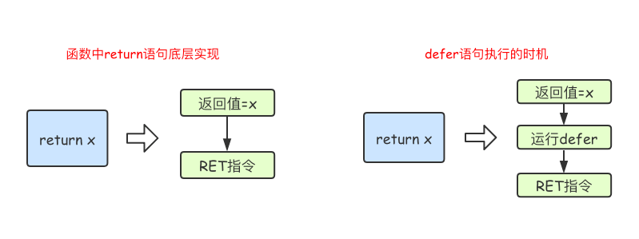

函数是组织好的、可重复使用的、用于执行指定任务的代码块。本文介绍了Go语言中函数的相关内容。
1.函数
Go语言中支持函数、匿名函数和闭包，并且函数在Go语言中属于“一等公民”。
1.1 函数定义
Go语言中定义函数使用func关键字，具体格式如下：
func 函数名(参数)(返回值){
函数体
}
其中：
- 函数名：由字母、数字、下划线组成。但函数名的第一个字母不能是数字。在同一个包内，函数名也称不能重名（包的概念详见后文）。
- 参数：参数由参数变量和参数变量的类型组成，多个参数之间使用
,分隔。 - 返回值：返回值由返回值变量和其变量类型组成，也可以只写返回值的类型，多个返回值必须用
()包裹，并用,分隔。 - 函数体：实现指定功能的代码块。
我们先来定义一个求两个数之和的函数：
func intSum(x int, y int) int {
return x + y
}
函数的参数和返回值都是可选的，例如我们可以实现一个既不需要参数也没有返回值的函数：
func sayHello() {
fmt.Println("Hello 沙河")
}
1.2 函数的调用
定义了函数之后，我们可以通过函数名()的方式调用函数。 例如我们调用上面定义的两个函数，代码如下：
func main() {
sayHello()
ret := intSum(10, 20)
fmt.Println(ret)
}
注意，调用有返回值的函数时，可以不接收其返回值。
1.3 参数
1.3.1 类型简写
函数的参数中如果相邻变量的类型相同，则可以省略类型，例如：
func intSum(x, y int) int {
return x + y
}
上面的代码中，intSum函数有两个参数，这两个参数的类型均为int，因此可以省略x的类型，因为y后面有类型说明，x参数也是该类型。
1.3.2 可变参数
可变参数是指函数的参数数量不固定。Go语言中的可变参数通过在参数名后加...来标识。
注意：可变参数通常要作为函数的最后一个参数。
举个例子：
func intSum2(x ...int) int {
fmt.Println(x) //x是一个切片
sum := 0
for _, v := range x {
sum = sum + v
}
return sum
}
调用上面的函数：
ret1 := intSum2()
ret2 := intSum2(10)
ret3 := intSum2(10, 20)
ret4 := intSum2(10, 20, 30)
fmt.Println(ret1, ret2, ret3, ret4) //0 10 30 60
固定参数搭配可变参数使用时，可变参数要放在固定参数的后面，示例代码如下：
func intSum3(x int, y ...int) int {
fmt.Println(x, y)
sum := x
for _, v := range y {
sum = sum + v
}
return sum
}
调用上述函数：
ret5 := intSum3(100)
ret6 := intSum3(100, 10)
ret7 := intSum3(100, 10, 20)
ret8 := intSum3(100, 10, 20, 30)
fmt.Println(ret5, ret6, ret7, ret8) //100 110 130 160
本质上，函数的可变参数是通过切片来实现的。
1.4 返回值
Go语言中通过return关键字向外输出返回值。
1.4.1多返回值
Go语言中函数支持多返回值，函数如果有多个返回值时必须用()将所有返回值包裹起来。
举个例子：
func calc(x, y int) (int, int) {
sum := x + y
sub := x - y
return sum, sub
}
1.4.2 返回值命名
函数定义时可以给返回值命名，并在函数体中直接使用这些变量，最后通过return关键字返回。
例如：
func calc(x, y int) (sum, sub int) {
sum = x + y
sub = x - y
return
}
1.4.3 返回值补充
当我们的一个函数返回值类型为slice时，nil可以看做是一个有效的slice，没必要显示返回一个长度为0的切片。
func someFunc(x string) []int {
if x == "" {
return nil // 没必要返回[]int{}
}
...
}
2.函数进阶
2.1 变量作用域
2.1.1 全局变量
全局变量是定义在函数外部的变量，它在程序整个运行周期内都有效。 在函数中可以访问到全局变量。
package main
import "fmt"
//定义全局变量num
var num int64 = 10
func testGlobalVar() {
fmt.Printf("num=%d\n", num) //函数中可以访问全局变量num
}
func main() {
testGlobalVar() //num=10
}
2.1.2 局部变量
局部变量又分为两种： 函数内定义的变量无法在该函数外使用，例如下面的示例代码main函数中无法使用testLocalVar函数中定义的变量x：
func testLocalVar() {
//定义一个函数局部变量x,仅在该函数内生效
var x int64 = 100
fmt.Printf("x=%d\n", x)
}
func main() {
testLocalVar()
fmt.Println(x) // 此时无法使用变量x
}
如果局部变量和全局变量重名，优先访问局部变量。
package main
import "fmt"
//定义全局变量num
var num int64 = 10
func testNum() {
num := 100
fmt.Printf("num=%d\n", num) // 函数中优先使用局部变量
}
func main() {
testNum() // num=100
}
接下来我们来看一下语句块定义的变量，通常我们会在if条件判断、for循环、switch语句上使用这种定义变量的方式。
func testLocalVar2(x, y int) {
fmt.Println(x, y) //函数的参数也是只在本函数中生效
if x > 0 {
z := 100 //变量z只在if语句块生效
fmt.Println(z)
}
//fmt.Println(z)//此处无法使用变量z
}
还有我们之前讲过的for循环语句中定义的变量，也是只在for语句块中生效：
func testLocalVar3() {
for i := 0; i < 10; i++ {
fmt.Println(i) //变量i只在当前for语句块中生效
}
//fmt.Println(i) //此处无法使用变量i
}
2.2 函数类型与变量
2.2.1 定义函数类型
我们可以使用type关键字来定义一个函数类型，具体格式如下：
type calculation func(int, int) int
上面语句定义了一个calculation类型，它是一种函数类型，这种函数接收两个int类型的参数并且返回一个int类型的返回值。
简单来说，凡是满足这个条件的函数都是calculation类型的函数，例如下面的add和sub是calculation类型。
func add(x, y int) int {
return x + y
}
func sub(x, y int) int {
return x - y
}
add和sub都能赋值给calculation类型的变量。
var c calculation
c = add
2.2.2 函数类型变量
我们可以声明函数类型的变量并且为该变量赋值：
func main() {
var c calculation // 声明一个calculation类型的变量c
c = add // 把add赋值给c
fmt.Printf("type of c:%T\n", c) // type of c:main.calculation
fmt.Println(c(1, 2)) // 像调用add一样调用c
f := add // 将函数add赋值给变量f
fmt.Printf("type of f:%T\n", f) // type of f:func(int, int) int
fmt.Println(f(10, 20)) // 像调用add一样调用f
}
2.3 高阶函数
高阶函数分为函数作为参数和函数作为返回值两部分。
2.3.1 函数作为参数
函数可以作为参数：
func add(x, y int) int {
return x + y
}
func calc(x, y int, op func(int, int) int) int {
return op(x, y)
}
func main() {
ret2 := calc(10, 20, add)
fmt.Println(ret2) //30
}
2.3.2 函数作为返回值
函数也可以作为返回值：
func do(s string) (func(int, int) int, error) {
switch s {
case "+":
return add, nil
case "-":
return sub, nil
default:
err := errors.New("无法识别的操作符")
return nil, err
}
}
2.4 匿名函数和闭包
2.4.1 匿名函数
函数当然还可以作为返回值，但是在Go语言中函数内部不能再像之前那样定义函数了，只能定义匿名函数。匿名函数就是没有函数名的函数，匿名函数的定义格式如下：
func(参数)(返回值){
函数体
}
匿名函数因为没有函数名，所以没办法像普通函数那样调用，所以匿名函数需要保存到某个变量或者作为立即执行函数:
func main() {
// 将匿名函数保存到变量
add := func(x, y int) {
fmt.Println(x + y)
}
add(10, 20) // 通过变量调用匿名函数
//自执行函数：匿名函数定义完加()直接执行
func(x, y int) {
fmt.Println(x + y)
}(10, 20)
}
匿名函数多用于实现回调函数和闭包。
2.4.2 闭包
闭包指的是一个函数和与其相关的引用环境组合而成的实体。简单来说，闭包=函数+引用环境(外层变量的引用)。 首先我们来看一个例子：
func adder() func(int) int {
var x int
return func(y int) int {
x += y
return x
}
}
func main() {
var f = adder()
fmt.Println(f(10)) //10
fmt.Println(f(20)) //30
fmt.Println(f(30)) //60
f1 := adder()
fmt.Println(f1(40)) //40
fmt.Println(f1(50)) //90
}
变量f是一个函数并且它引用了其外部作用域中的x变量，此时f就是一个闭包。 在f的生命周期内，变量x也一直有效。 闭包进阶示例1：
func adder2(x int) func(int) int {
return func(y int) int {
x += y
return x
}
}
func main() {
var f = adder2(10)
fmt.Println(f(10)) //20
fmt.Println(f(20)) //40
fmt.Println(f(30)) //70
f1 := adder2(20)
fmt.Println(f1(40)) //60
fmt.Println(f1(50)) //110
}
闭包进阶示例2：
func makeSuffixFunc(suffix string) func(string) string {
return func(name string) string {
if !strings.HasSuffix(name, suffix) {
return name + suffix
}
return name
}
}
func main() {
jpgFunc := makeSuffixFunc(".jpg")
txtFunc := makeSuffixFunc(".txt")
fmt.Println(jpgFunc("test")) //test.jpg
fmt.Println(txtFunc("test")) //test.txt
}
闭包进阶示例3：
func calc(base int) (func(int) int, func(int) int) {
add := func(i int) int {
base += i
return base
}
sub := func(i int) int {
base -= i
return base
}
return add, sub
}
func main() {
f1, f2 := calc(10)
fmt.Println(f1(1), f2(2)) //11 9
fmt.Println(f1(3), f2(4)) //12 8
fmt.Println(f1(5), f2(6)) //13 7
}
闭包其实并不复杂，只要牢记闭包=函数+引用环境。
2.5 defer语句
Go语言中的defer语句会将其后面跟随的语句进行延迟处理。在defer归属的函数即将返回时，将延迟处理的语句按defer定义的逆序进行执行，也就是说，先被defer的语句最后被执行，最后被defer的语句，最先被执行。
举个例子：
func main() {
fmt.Println("start")
defer fmt.Println(1)
defer fmt.Println(2)
defer fmt.Println(3)
fmt.Println("end")
}
输出结果：
start
end
3
2
1
由于defer语句延迟调用的特性，所以defer语句能非常方便的处理资源释放问题。比如：资源清理、文件关闭、解锁及记录时间等。
2.5.1 defer执行时机
在Go语言的函数中return语句在底层并不是原子操作，它分为给返回值赋值和RET指令两步。而defer语句执行的时机就在返回值赋值操作后，RET指令执行前。具体如下图所示：

2.5.2 defer经典案例
阅读下面的代码，写出最后的打印结果。
func f1() int {
x := 5
defer func() {
x++
}()
return x
}
func f2() (x int) {
defer func() {
x++
}()
return 5
}
func f3() (y int) {
x := 5
defer func() {
x++
}()
return x
}
func f4() (x int) {
defer func(x int) {
x++
}(x)
return 5
}
func main() {
fmt.Println(f1())
fmt.Println(f2())
fmt.Println(f3())
fmt.Println(f4())
}
2.5.3 defer面试题
func calc(index string, a, b int) int {
ret := a + b
fmt.Println(index, a, b, ret)
return ret
}
func main() {
x := 1
y := 2
defer calc("AA", x, calc("A", x, y))
x = 10
defer calc("BB", x, calc("B", x, y))
y = 20
}
问，上面代码的输出结果是？（提示：defer注册要延迟执行的函数时该函数所有的参数都需要确定其值）
A 1 2 3
B 10 2 12
BB 10 12 22
AA 1 3 4
3.内置函数介绍
| 内置函数 | 介绍 |
|---|---|
| close | 主要用来关闭channel |
| len | 用来求长度，比如string、array、slice、map、channel |
| new | 用来分配内存，主要用来分配值类型，比如int、struct。返回的是指针 |
| make | 用来分配内存，主要用来分配引用类型，比如chan、map、slice |
| append | 用来追加元素到数组、slice中 |
| panic和recover | 用来做错误处理 |
3.1 panic/recover
Go语言中目前（Go1.12）是没有异常机制，但是使用panic/recover模式来处理错误。 panic可以在任何地方引发，但recover只有在defer调用的函数中有效。 首先来看一个例子：
func funcA() {
fmt.Println("func A")
}
func funcB() {
panic("panic in B")
}
func funcC() {
fmt.Println("func C")
}
func main() {
funcA()
funcB()
funcC()
}
输出：
func A
panic: panic in B
goroutine 1 [running]:
main.funcB(...)
.../code/func/main.go:12
main.main()
.../code/func/main.go:20 +0x98
程序运行期间funcB中引发了panic导致程序崩溃，异常退出了。这个时候我们就可以通过recover将程序恢复回来，继续往后执行。
func funcA() {
fmt.Println("func A")
}
func funcB() {
defer func() {
err := recover()
//如果程序出出现了panic错误,可以通过recover恢复过来
if err != nil {
fmt.Println("recover in B")
}
}()
panic("panic in B")
}
func funcC() {
fmt.Println("func C")
}
func main() {
funcA()
funcB()
funcC()
}
注意：
recover()必须搭配defer使用。defer一定要在可能引发panic的语句之前定义。
4.练习题
- 分金币
/*
你有50枚金币，需要分配给以下几个人：Matthew,Sarah,Augustus,Heidi,Emilie,Peter,Giana,Adriano,Aaron,Elizabeth。
分配规则如下：
a. 名字中每包含1个'e'或'E'分1枚金币
b. 名字中每包含1个'i'或'I'分2枚金币
c. 名字中每包含1个'o'或'O'分3枚金币
d: 名字中每包含1个'u'或'U'分4枚金币
写一个程序，计算每个用户分到多少金币，以及最后剩余多少金币？
程序结构如下，请实现 ‘dispatchCoin’ 函数
*/
var (
coins = 50
users = []string{
"Matthew", "Sarah", "Augustus", "Heidi", "Emilie", "Peter", "Giana", "Adriano", "Aaron", "Elizabeth",
}
distribution = make(map[string]int, len(users))
)
func main() {
left := dispatchCoin()
fmt.Println("剩下：", left)
}
package main
import "fmt"
func dispatchCoin() int {
var (
coins = 50
users = []string{
"Matthew", "Sarah", "Augustus", "Heidi", "Emilie", "Peter", "Giana", "Adriano", "Aaron", "Elizabeth",
}
distribution = make(map[string]int, len(users))
)
for _, user := range users {
getCoin := 0
for _, u := range user {
switch u {
case 'e', 'E':
getCoin += 1
case 'i', 'I':
getCoin += 2
case 'o', 'O':
getCoin += 3
case 'u', 'U':
getCoin += 4
}
}
distribution[user] = getCoin
coins -= getCoin
}
fmt.Println(distribution)
return coins
}
func main() {
left := dispatchCoin()
fmt.Println("剩下：", left)
}